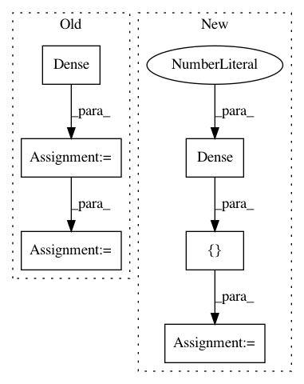

d72cd19198775068a1f26384146f19498554499f,examples/basic_tutorials/4_mnist_mlp_eager_mode_dynamic_reuse_model.py,CustomModelHidden,__init__,#CustomModelHidden#,22
Before Change
self.innet = Input([None, 784])
self.dropout1 = Dropout(keep=0.8)(self.innet)
self.dense1 = Dense(n_units=800, act=tf.nn.relu)(self.dropout1)
self.dropout2 = Dropout(keep=0.8)(self.dense1)
self.dense2 = Dense(n_units=800, act=tf.nn.relu)(self.dropout2)
self.dropout3 = Dropout(keep=0.8)(self.dense2)
def forward(self, x):
After Change
self.innet = Input([None, 784])
self.dropout1 = Dropout(keep=0.8)(self.innet)
self.seq = SequentialLayer(
self.dropout1,
[
Dense(n_units=800, act=tf.nn.relu),
Dropout(keep=0.8),
Dense(n_units=800, act=tf.nn.relu),
]
)
self.dropout3 = Dropout(keep=0.8)(self.seq)
In pattern: SUPERPATTERN
Frequency: 3
Non-data size: 6
Instances
Project Name: tensorlayer/tensorlayer
Commit Name: d72cd19198775068a1f26384146f19498554499f
Time: 2019-01-26
Author: zhangjqsmiling@gmail.com
File Name: examples/basic_tutorials/4_mnist_mlp_eager_mode_dynamic_reuse_model.py
Class Name: CustomModelHidden
Method Name: __init__
Project Name: philipperemy/keras-tcn
Commit Name: 0cfe82c6beb9a28a5ff7da81b86fa0e93c388f14
Time: 2019-11-20
Author: premy@cogent.co.jp
File Name: tasks/save_reload_model.py
Class Name:
Method Name:
Project Name: philipperemy/keras-tcn
Commit Name: 565960370df285169f4a2b2a7368e3d9f07e6617
Time: 2021-03-09
Author: premy.enseirb@gmail.com
File Name: tasks/non_causal.py
Class Name:
Method Name: